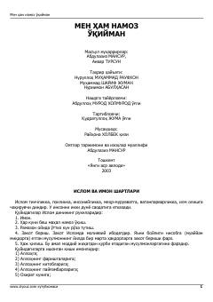

MHIbodat va namoz o'qish qoidalarini o'rganish uchun qo'llanma.
Ushbu kitob islom dinining asosiy рукнлари, jumladan, namoz o'qish tartiblari, tahorat, g'usl va tayammum qoidalari haqida batafsil ma'lumot beradi. Kitobda ibodatlarni to'g'ri bajarish tartiblari va shartlari oddiy va tushunarli tilda bayon etilgan. Asar keng kitobxonlar ommasiga mo'ljallangan.